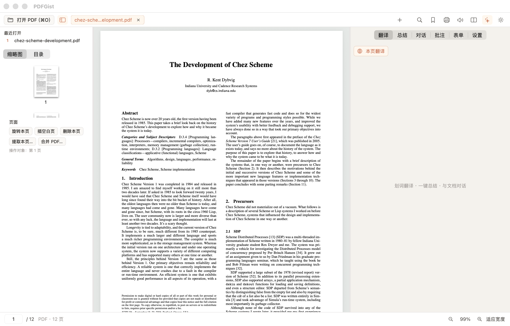

🚀 五分钟上手
下载、打开、翻一段。教程到此结束。以下内容都是可选的。
- Install. Grab the latest dmg and drag PDFGist into Applications.
- Open a PDF. Click Open PDF or press ⌘O.
- Configure your model key once. Settings tab, pick a preset, paste the key, save.
- Translate a selection. Select a paragraph, click Translate, read the stream.
- Summarize. Summarize tab, pick scope, click once.

截图为真实的 macOS 版本。
📖 阅读
阅读器该有的都有，且不需要学。
- Tabs. Open many documents; ⌘W closes the tab.
- Views. Single or two-page view; pinch to zoom.
- Navigate. Thumbnails, outline, search with ⌘F.
- Continue reading. Recents remember your position; files stay in place.
- Dark mode, print, read aloud. Sun icon, ⌘P, speaker icon.
- EPUB too. Same workflow for e-books.
🔑 翻译与模型 Key
PDFGist 不带任何 AI 配额，你接入自己的服务商。Key 只存本机，请求直达你的服务商。
API Key 填在哪里？
- Open the AI panel. Click the Settings tab.
- Pick a preset. The base URL fills itself.
- Paste the key as-is:
sk-..., no quotes, no line breaks. - Save. Fetch models. Pick one. Test.
Key 从哪来？
From your provider's console. Coding-plan keys work too — pick the matching preset.
翻译模式怎么选？
- Selection translation. For a sentence or a paragraph.
- Translate page. For quick reading.
- Paragraph pairs. For careful reading.
Set the target language in Settings. Default is Chinese.
✨ 总结与对话
- Summarize. Pick scope, click once, read the structured result.
- Chat. Ask about what you are reading.
- Reuse. One click to copy.
🖍️ 批注与书签
- Highlight. Select, pick a color, add a note if you want.
- Bookmark. ⌘B or the bookmark icon.
- Storage. A sidecar JSON sits next to your PDF; the PDF itself is never modified.
- Export. Markdown export for Obsidian and friends.
✂️ 页面编辑
所有操作都在内存中进行，绝不改动你的源文件。
- Rotate or delete the current page from the sidebar.
- Insert a blank page after the current one.
- Extract selected pages into a new PDF.
- Merge another PDF in.
- Bake watermarks and text boxes into the exported copy.
Fill AcroForm fields and export the filled copy.
❓ 常见问题
我的数据存在哪里？
Settings live in the app config folder; annotations live beside each PDF.
隐私如何保障？
Local-first: no account, no telemetry. AI requests go straight to your provider.
Windows / Linux 什么时候有？
macOS is supported today; Windows and Linux are under active development.
更新机制是怎样的？
File → Check for Updates (⌘U); silent checks at most daily; installs need your click.
怎么卸载？
Drag the app to Trash; remove the config folder to erase keys and settings.
翻译失败或卡住怎么办？
Check the key, click Save, run the test; then check quota and network.